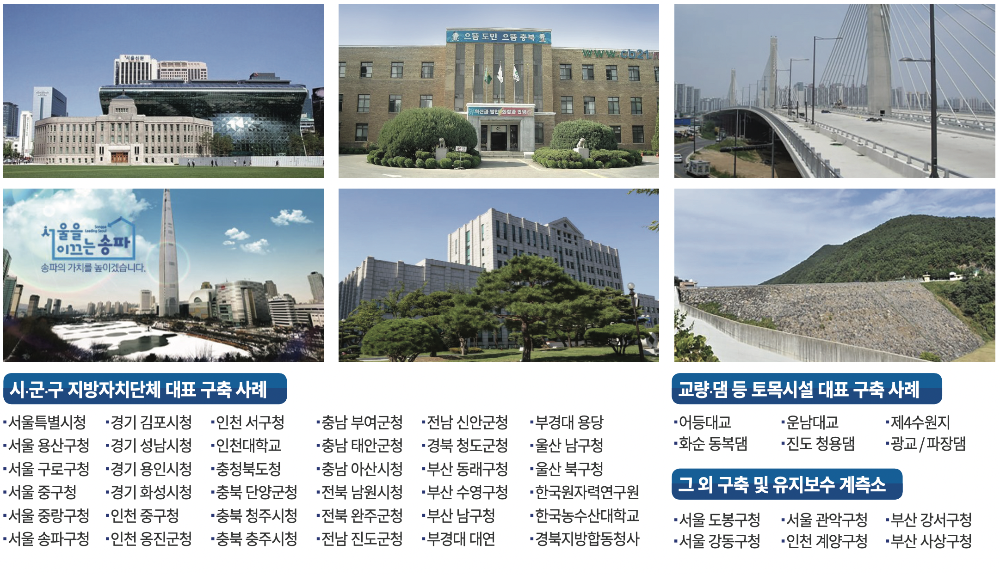

개요
2013년 창립 이래로 이에스텍이엔지(주)는 다양한
공공기관, 지자체, 국공립 대학교 등에 지진 가속도 계측기를 설치ㆍ운영 중에 있습니다.
공공기관, 지자체, 국공립 대학교 등에 지진 가속도 계측기를 설치ㆍ운영 중에 있습니다.
-
21
시청·정부종합청사
-
53
구·군청
-
17
댐·교량·학교
-
56
민간시설물
지진가속도 계측 시스템 구축 및 유지보수

Guralp社 시공 계측소

내진성능평가 및 내진 보강사업